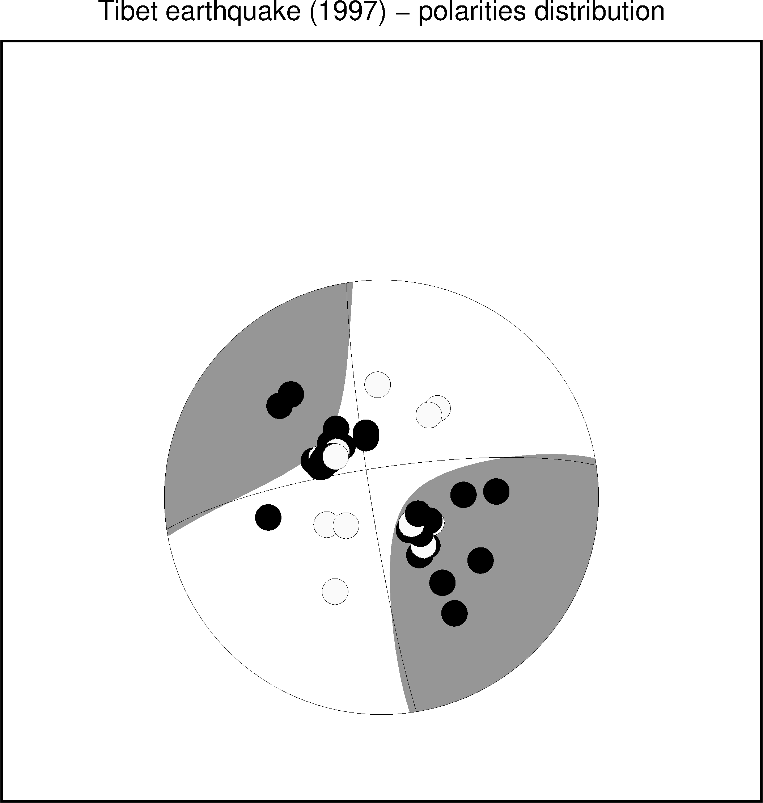

13.48 pspolar¶
| 官方文档: | pspolar |
|---|---|
| 简介: | 将台站的极性信息画在震源球上 |
一般情况下，需要使用psmeca绘制震源球，再使用pspolar将每个台站的极性信息画在相应的震源球上。因而，通常psmeca和pspolar需要连在一起使用。
13.48.1 选项¶
<infile>输入数据的格式为:
station_code azimuth take-off_angle polarity
station_code通常是台站名azimuth震相从源到台站的方位角take-off_angle震相从源出发时的出射角polarity- 压缩部分（正极性）：可以取
c|C|u|U|+ - 拉伸部分（负极性）：可以取
d|D|r|R|- - 未定义：其他字符
- 压缩部分（正极性）：可以取
-C<new_lon>/<new_lat>[W<pen>][P<pointsize>]- 将震源球放在新的位置，并将新位置与老位置之间连线。
-D<lon>/<lat>- 震源球的位置，需要与psmeca输入数据中震源球的位置相同
-E<color>- 拉伸象限内台站的符号填充色
-F<color>- 设置震源球的背景色，默认不填充。
-G<color>- 压缩象限内台站的符号填充色，默认值为黑色
-M<size>- 震源球的尺寸，需要与psmeca中
-S选项中震源球尺寸相同 -S<symbol_type><size>- 类似于psxy的
-S选项，控制极性要以什么符号以及多大尺寸绘制到震源球上，可选的符号类型包括a|c|d|h|i|p|s|t|x -N- 不跳过地图边界外的符号
-Q<mode><args>设置多个属性，该选项可重复使用。
-Qe[<pen>]拉伸象限内符号的轮廓属性-Qf[<pen>]震源球的轮廓属性-Qg[<pen>]压缩象限内符号的轮廓属性-Qh使用HYPO71输出的特殊格式-Qs<half-size>/[V[<vecpar>]][G<fill>][L]绘制S波偏振方位角，见官方文档-Qt[<pen>]station_code的字体颜色
-T<angle>/<form>/<justify>/<fontsize>- 将 station_code 写到图上，默认值为
0.0/0/5/12。<fontsize>的单位为p -W<pen>- 设置画笔属性
13.48.2 示例¶
#!/bin/bash
ps=pspolar_ex1.ps
gmt gmtset PROJ_LENGTH_UNIT inch MAP_TICK_LENGTH_PRIMARY 0.075i MAP_FRAME_WIDTH 0.1i \
MAP_ORIGIN_X 2.5c MAP_ORIGIN_Y 1.3i FONT_TITLE 18p
# this is Harvard CMT for tibethan earthquake (1997)
gmt psmeca -Fo -R85/89/25/50 -JX7i -P -M -Sm4i -N -L -K -G150 -T0 << EOF > $ps
# lon lat mrr mtt mff mrt mrf mtf ex nlon nlat
87 35 -0.26 -0.71 0.97 -0.20 -0.61 2.60 27 0 0
EOF
# and polarities observed
gmt pspolar -R -J -D87/35 -M4i -N -Sc0.3i -Qe -O \
-B0 -B+t"Tibet earthquake (1997) - polarities distribution" << EOF >> $ps
1 147.8 53 c
2 318.6 53 c
3 311.9 53 c
4 122.5 45 c
5 87.1 44 c
6 259.9 44 c
7 358.0 43 d
8 32.3 40 d
9 144.5 40 c
10 206.2 40 d
11 30.0 36 d
12 88.3 31 c
13 326.5 31 c
14 298.4 29 c
15 298.3 29 c
16 316.2 28 c
17 301.5 27 c
18 300.7 27 c
19 303.0 27 d
20 302.7 26 c
21 301.7 26 c
22 302.3 26 c
23 302.2 26 c
24 314.1 26 c
25 296.2 26 c
26 302.3 26 c
27 146.8 26 c
28 145.7 26 d
29 145.7 26 c
30 307.0 26 c
31 311.9 26 c
32 136.4 25 c
33 297.6 25 c
34 306.1 25 c
35 306.8 25 c
36 307.6 25 c
37 346.5 25 c
39 306.5 24 c
40 317.3 24 c
41 305.2 24 c
42 305.9 24 c
43 311.9 24 c
44 307.5 24 c
45 138.7 24 d
46 322.4 24 c
47 305.3 24 c
48 304.9 24 c
49 309.3 24 c
50 307.6 24 c
51 315.5 24 d
52 310.3 24 c
53 308.5 24 c
54 307.4 24 c
55 307.5 24 c
56 307.4 24 c
57 307.6 24 c
58 307.1 24 c
59 311.5 23 d
61 243.5 23 d
63 345.2 23 c
64 117.0 21 d
65 133.1 20 c
66 116.0 20 c
67 231.3 17 d
68 139.9 16 c
69 131.7 15 d
70 114.1 15 c
EOF
rm gmt.*

{kind=link}
pspolar示例